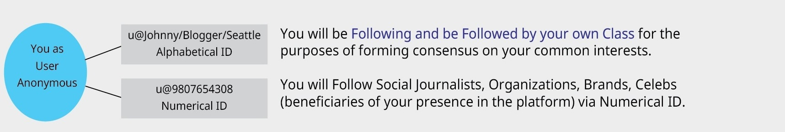
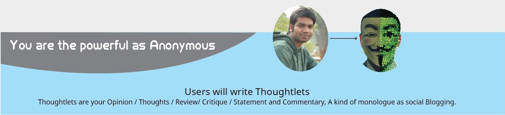
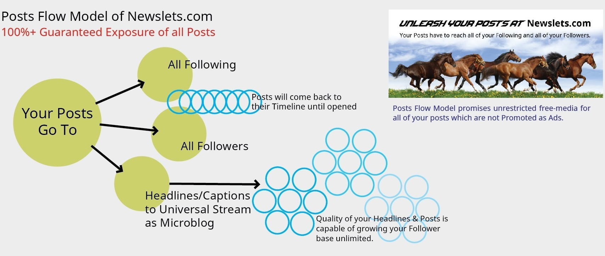
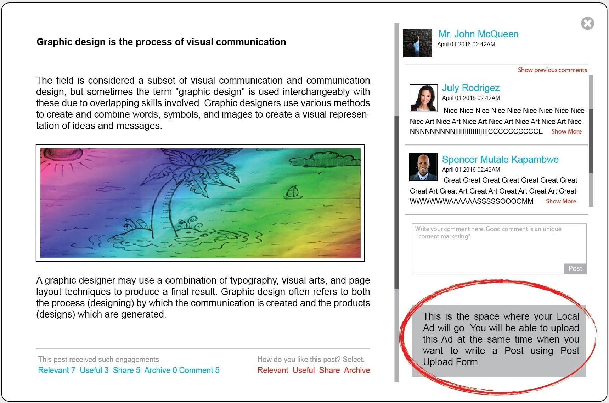

1. By design, User of Newslets is an Anonymous entity. You will be kept Anonymous through a Numerical ID assigned parallel to your Alphabetical ID.
Beneficiaries can only Follow your Posts via your Numerical ID but they will not know your identity. Beneficiaries can make Follow Move on your Numerical ID when the read your Posts via Microblog/Headlines.
2. Newslets platform has other 4 different types of users identified as Social Journalists, Organizations, Brands, Celebs. These categories of users are collectively termed as "Beneficiaries". They are the natural beneficiaries of your presence in the Plat-form. As a User, you are a Reader of news written by Social Journalists, you vote and support Organizations, you become consumer/customers to Brands, you support/cheer Celebs.
They have to create relevant, useful, worthy contents to achieve your attentions and Engagements.
3. As User Anonymous , you will Follow Beneficiaries according to your needs of life and lifestyle. Newslets is designed on the principle of "Follow Objectively". Meaning follow only those who you need to.
4. Newslets supports free flow of all types of Communication organically without creating any barrier either requiring ad or promotion. Your Posts will be distributed to all of your Following. So your review/suggestion/statement/opinion/thouhts will form a consensus among your Following and Followers. Beneficiaries will know your thoughts immediately and take corrective measures. So be responsible and guide Beneficiaries as responsible user of the platform.
5. Newslets will recognize common users as Graduated Users who will consistently write quality posts, have reasonable fre-quency, achieve higher engagements from Following and Followers. Once recognized as Graduated User, you will be able to accept Local Ads to publish along with your posts. You can turn your account in to your own publication channel and have regular income.
